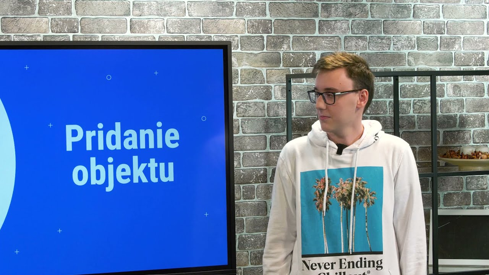

Realizujeme odborné vzdelávanie zamerané na IT pre štátne školy ako nový štandard formálneho vzdelávania

V OpenLabe študentov učíme najnovšie technológie. Zároveň im dávame veľkú slobodu, pričom ich vedieme k zodpovednosti a samostatnosti, učíme ich princípy partnerského prístupu, pracovať v tíme, trénujeme ich schopnosti sebareflexie a podnecujeme ich kreativitu. Takto študentov pripravujeme osobnostne aj tech zručnosťami na veľké veci, ktoré môžu v budúcnosti tvoriť.
Osnovy aj učebné materiály pre všetky tech oblasti sú open source.
Študentov vedieme k tímovému riešeniu problémov.
Vytvárame šikovné tímy schopné riešiť veľké problémy.
Veríme, že otvorený prístup a kvalitné vzdelanie sú základom úspechu jednotlivca ako aj prosperujúcej spoločnosti.
Uvedomujeme si, že ak chceme niečo zmeniť, musíme ísť príkladom. Našim cieľom je rozšíriť princípy OpenLab-u na všetkých úrovniach škôl a nastaviť svetový štandard vzdelávania v školstve v technológiách.
tried
študentov
LabMastrov
školy
V akých Laboch možeš študovať? |
HybridLabŠtudenti sa učia vyvíjať hybridné aplikácie v HTML, PHP, CSS, JavaScript, Ionicu, Vue a OctoberCMS. |
GamesLabŠtudenti vyvíjajú mobilné hry v Unity a GDevelop, učia sa tvoriť 2D grafiku v programe Piskel, 3D grafiku v programe Blender a herný dizajn. |
AppsLabŠtudenti sa učia vyvíjať mobilné aplikácie v C# a Xamarin.forms a webové aplikácie v Java a Angular JS. |
|---|
 |
 |
|---|---|
Hálova 16, Bratislava |
Nábrežná 1325, Kysucké Nové Mesto |
Stredná Priemyselná Škola Elektrotechnická |
Stredná Priemyselná Škola Informačných Technológií |
Čo si myslia o OpenLabe študenti?Openlab mi dal neuveriteľné množstvo skúsenosti do života, super ľudí, s ktorými vďaka stážam pracujem v rovnakej firme a samozrejme mnoho ďalších dôležitých veci pre fungovanie v dnešnej “IT” sfére. Prístup akým sa tu vyučuje je presne taký, aký v dnešnej dobe potrebujeme na stredných školách. Marko Hrivnak |
 |
|---|
LabMastri |
Firmy |
Školy |
Študenti |
|---|---|---|---|
| Odborníci z praxe, ktorí odovzdávajú študentom svoj know-how v roli mentora 5 hodín týždenne celý školský rok. | Technologické firmy sú garantmi obsahu jednotlivých labov, spolupracujú so študentmi na projektoch a v rámci študentských stáží. | Stredné odborné školy zamerané na digitálne technológie v jednotlivých regiónoch inovujú svoje technologické vzdelávanie. | Stredoškoláci so záujmom o najnovšie technológie a silnou vnútornou motiváciou učiť sa nové veci a rozvíjať svoje schopnosti. |
Labmastri v OpenLabeV OpenLabe sa okrem technologických vedomostí a zručností snažíme rozvíjať aj iné dôležité parametre kvalitných ľudí.Ako sú zodpovednosť, spoľahlivosť, samostatnosť, ale aj tímovosť a vzájomnú komunikáciu. Prijímame výzvy najmä voči svojím vlastným ja. Lenka Kubová |

|
|---|
Stredoškoláci v OpenLaboch pracujú na reálnych projektoch v spolupráci s firmami pričom získavajú praktické zručnosti a osvojujú si prístup, ktorým neskôr posunú svet technológií a celú spoločnosť vpred.
Študentský projekt Mapovanie z HybridLabuMapovanie je hybridná aplikácia, ktorá umožní ľuďom so spoločnými záľubami deliť sa o svoje obľúbené miesta a ukladať ich do komunitnej mapy. Aplikáciu tak môžu využívať ľudia z rôznych komunít. Užívateľ sa jednoducho pridá do skupiny, ktorá ho zaujíma, a následne môže vidieť už “zmapované” miesta alebo pridávať nové. Prehľad príspevkov a skupín mu zobrazuje dostupná mapa. Do aplikácie sa užívateľ vie prihlásiť cez SSO, t.j. prihlásenie pomocou služby tretej strany, napr. Facebook alebo Apple ID účet. Na vývoj študenti použili technológie - Ionic, OctoberCMS a Vue. Aktuálne je aplikácia v MVP verzii. |
 |
|---|
PartnerstvoDáva študentom slobodu, ktorú vyvažujú zodpovednosťou. Spolupráca LabMastra a študentov je v partnerskej rovine. |
LabMasterJe mentor s expertízou v danej oblasti, ktorý nastavuje rámce a sprevádza študentov pri dosahovaní míľnikov. |
Učebný blokJe základný dokument, z ktorého sa študenti učia. Obsahuje všetky vzdelávacie podklady pre konkrétnu fázu. |
|---|---|---|
Problem drivenJe princíp učenia, vďaka ktorému sú študenti vedení ku kritickému mysleniu s cieľom vyriešiť konkrétne problémy. |
Project drivenPo teoretickej fáze sú študenti rozdelení do tímov, v ktorých v spolupráci s firmami tvoria konkrétny projekt pre zákazníka. |
SamoštúdiumŠtudenti trávia 80% času samoštúdiom a sú vedení k tímovej spolupráci. 20% teórie slúži iba ako odrazový mostík. |

EXECUTIVE TEAM
Executive Director

BOARD MEMBER & EXECUTIVE TEAM
Co-founder & Executive Director

BOARD MEMBER
Co-founder

BOARD MEMBER & EXECUTIVE TEAM
Co-founder & Tech Garant pre HybridLab a AppsLab

BOARD MEMBER & EXECUTIVE TEAM
Tech Garant pre GamesLab

BOARD MEMBER & EXECUTIVE TEAM
Head of Marketing

OpenLab postupne rozširujeme ako neziskový vzdelávací projekt s cieľom otvoriť OpenLab-y zamerané na rôzne IT technológie na čo najväčší počet škôl vo všetkých slovenských regiónoch. Veríme, že OpenLab bude natoľko úspešný, že sa stane štandardom vzdelávania na Slovensku!
Chcem podporiťPodcast Moderná škola vznikol v spolupráci s Romanom ”Yablkom” Hraškom, kde našim zámerom je rozobrať svet štandardného vzdelávania a spôsob ako môže fungovať moderné vzdelávanie v technológiach.